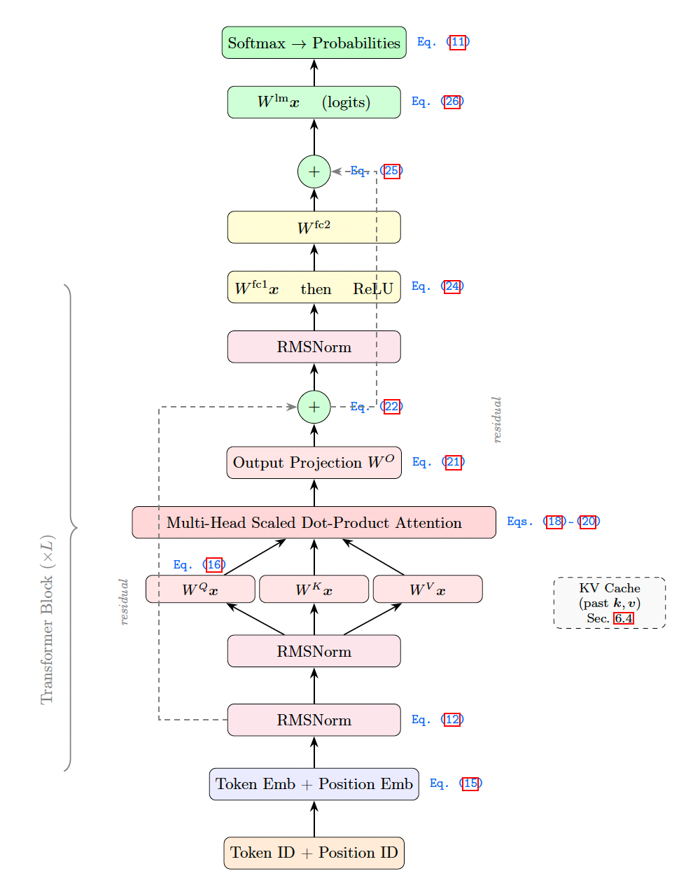
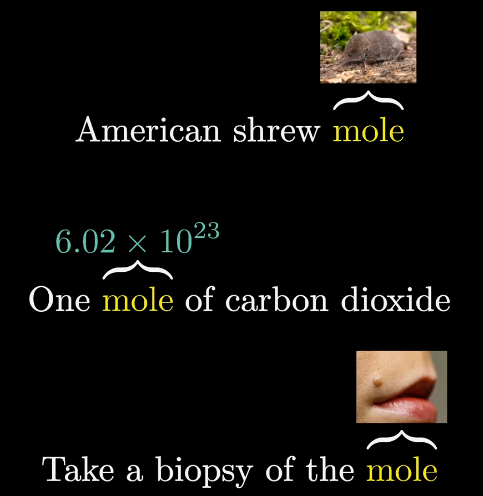
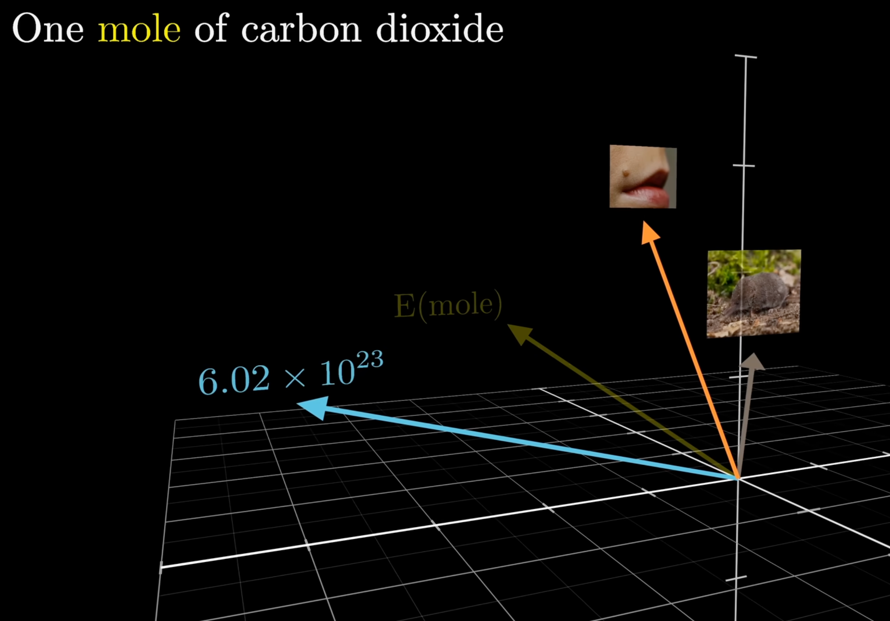
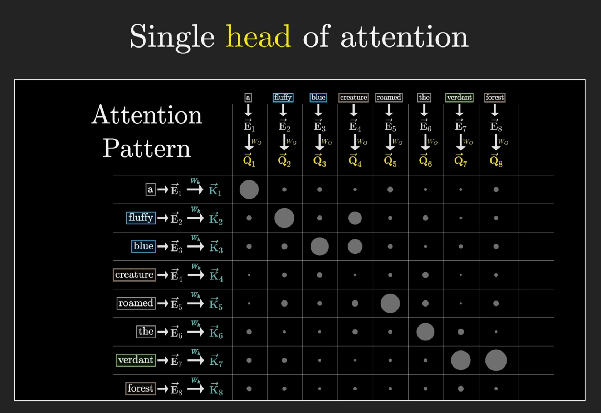
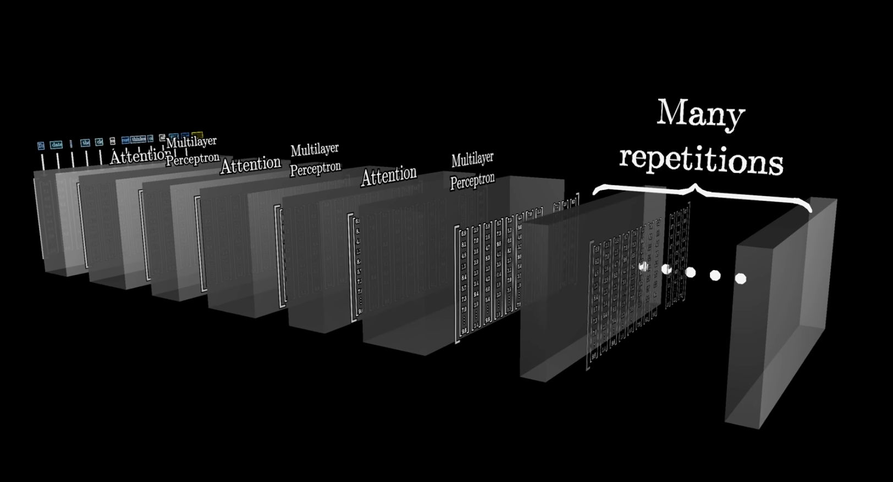
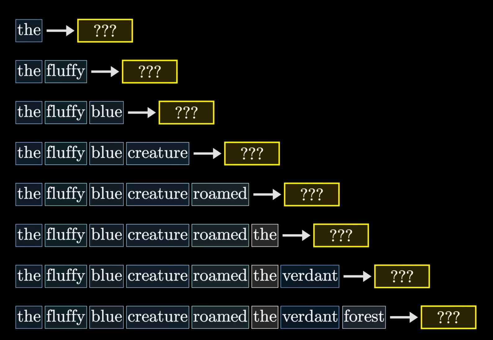
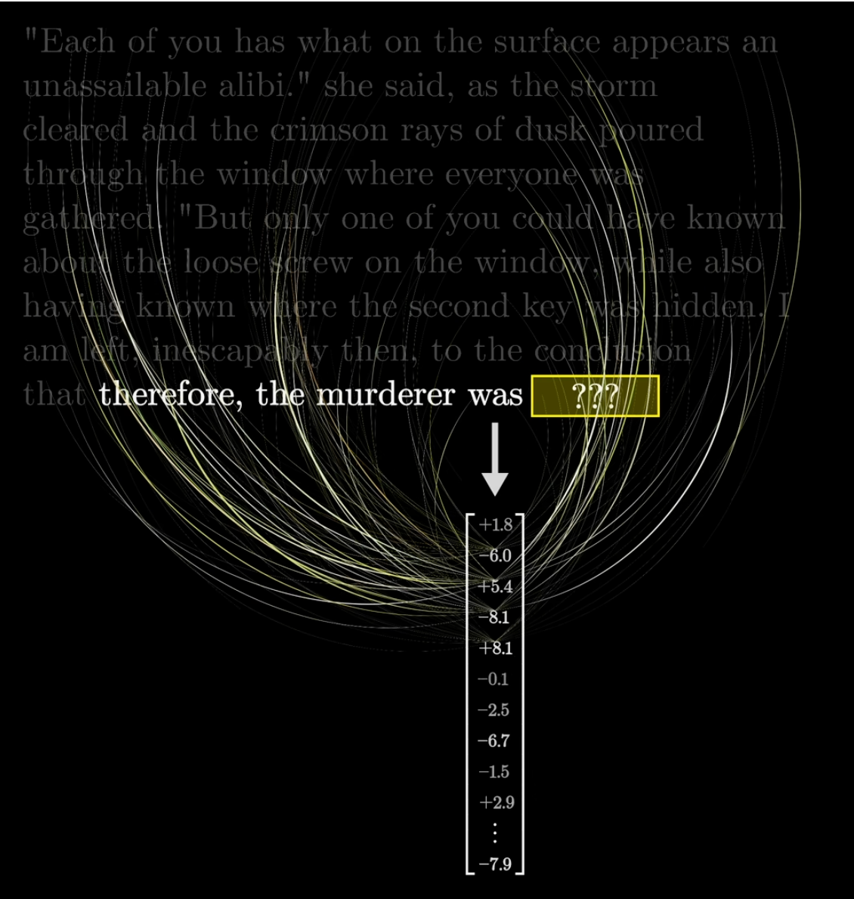

The Mathematics of microGPT#
Resources
A High-Level Companion to Andrej Karpathy’s 200-Line GPT Implementation
Prepared for FINM 33200: Generative and Agentic AI for Finance, The University of Chicago.
Based on microgpt.py by Andrej Karpathy.
Overview#
In February 2026, Andrej Karpathy released microGPT—a single Python file of approximately 200 lines, with no external dependencies, that implements the complete training and inference loop for a GPT-class language model. The code trains a character-level transformer on a dataset of 32,000 human names and learns to generate new, plausible-sounding names.
microGPT is pedagogically extraordinary because it contains the entire algorithmic content of modern large language models: a tokenizer, a scalar-valued automatic differentiation engine, a GPT-2-style transformer architecture with multi-head causal attention, the Adam optimizer, a training loop, and an autoregressive inference loop. Everything beyond these 200 lines—GPU parallelism, tensor operations, BPE tokenization, distributed training—is, as Karpathy puts it, “just efficiency.”
Model Specifications#
Hyperparameter |
Value |
Variable |
|---|---|---|
Vocabulary size |
27 |
|
Embedding dimension |
16 |
|
Number of layers |
1 |
|
Number of attention heads |
4 |
|
Head dimension |
4 |
|
Max sequence length |
16 |
|
Total parameters |
4,192 |
|
The vocabulary consists of the 26 lowercase English letters plus a special Beginning-of-Sequence (BOS) token, for a total of \(V = 27\) tokens.
Architecture#
The model is a causal (autoregressive) transformer decoder following the GPT-2 architecture, with a few simplifications: RMSNorm instead of LayerNorm, ReLU instead of GeLU, and no bias terms. Despite these simplifications, the core data flow is identical to production LLMs.
At a high level, the forward pass works as follows:
Tokenization: Each name is converted to a sequence of character indices, wrapped with
BOSdelimiters.Embedding: The token and its position are each looked up in learned embedding tables and summed.
Transformer Block (repeated \(L\) times):
Multi-Head Attention: The current token queries all past tokens via scaled dot-product attention, allowing information to flow across positions.
Feed-Forward Network (MLP): A two-layer network (expand to 4x width, apply ReLU, project back down) processes each position independently.
Both sub-layers use residual connections and RMSNorm.
Output: The final hidden state is projected to vocabulary size, producing logits that are converted to a probability distribution via softmax.
Architecture Diagram#

Architecture of microGPT. Dashed lines indicate residual connections. The transformer block (between the braces) is repeated \(L\) times (\(L=1\) by default).
How Attention Changes Meaning#
After the embedding step, every token is represented by a vector that encodes only that word in isolation—a context-free lookup. The word “mole” gets the same embedding whether it appears in “American shrew mole,” “one mole of carbon dioxide,” or “take a biopsy of the mole.”

The same token receives the same initial embedding regardless of context. Source: 3Blue1Brown
Attention is the mechanism that fixes this. The embedding space has many directions, and different meanings of a word correspond to different directions. A well-trained attention block computes what needs to be added to the generic embedding to move it toward the correct contextual meaning—chemistry, zoology, or dermatology in this case.

In the phrase “one mole of carbon dioxide,” attention shifts the generic E(mole) toward the chemistry direction. Source: 3Blue1Brown
Concretely, a single attention head computes an attention pattern—a grid of scores indicating how relevant each word is to every other word. Consider the phrase “a fluffy blue creature roamed the verdant forest.” The attention pattern below shows that the adjectives fluffy and blue attend strongly to the noun creature, while verdant attends to forest. The value vectors for those adjectives are then added to the noun’s embedding, producing a refined vector that encodes “fluffy blue creature” rather than just “creature.”

An attention pattern for a single head. Larger dots indicate stronger attention. The adjectives fluffy and blue attend to creature; verdant attends to forest. Source: 3Blue1Brown
This is exactly what is happening in microGPT: each of its 4 attention heads learns a different pattern of which characters are relevant to which other characters when generating names.
The KV Cache#
Recall that attention computes three vectors for each token: a query (what am I looking for?), a key (what do I contain?), and a value (my actual information). At each position \(t\), the query is compared against every previous token’s key to determine attention weights, and the corresponding values are combined.
During autoregressive generation, the model produces one token at a time. Without caching, generating the token at position \(t\) would require recomputing the key and value vectors for all previous positions \(0, 1, \ldots, t-1\) from scratch—even though they were already computed in earlier steps. The KV cache avoids this redundant work: each position’s key and value vectors are computed once and stored, so that at position \(t\) the model only computes Q, K, V for the new token, appends the new K and V to the cache, and runs attention against the full cache.
This cache also enforces the causal property: because it only contains positions \(\leq t\), each position can only attend to the current and past positions, never the future. In practice, the KV cache is a key engineering constraint—its memory footprint grows linearly with sequence length, which is why long conversations and documents require significant GPU memory during inference.
Stacking Transformer Blocks#
A single attention head can capture one type of relationship (e.g., adjectives modifying nouns). Multi-head attention runs several heads in parallel to capture multiple relationship types simultaneously. But the real power comes from stacking entire transformer blocks—each consisting of an attention layer followed by an MLP—so that the output of one block becomes the input to the next.

A transformer repeatedly alternates between attention and MLP blocks. Each pass refines the embeddings further. Source: 3Blue1Brown
microGPT uses just \(L = 1\) transformer block, but production models like GPT-4 and Claude use 100+ layers. Early layers tend to capture surface-level patterns (which characters follow which), while deeper layers build increasingly abstract representations—sentiment, factual relationships, and long-range dependencies. Each layer operates on the already-refined embeddings from the previous layer, compounding the model’s understanding.
During training, the model doesn’t just predict the final token—it simultaneously predicts the next token at every position in the sequence. This is what makes training so efficient: a single input sequence provides many training examples at once.

During training, every position simultaneously predicts the next token, turning one sequence into many training examples. Source: 3Blue1Brown
At inference time, only the last vector in the sequence matters for predicting the next token. After flowing through all the transformer blocks, this final embedding must encode everything relevant from the entire context. Consider a mystery novel ending with “therefore, the murderer was”—the final vector for “was” must somehow have absorbed the key plot details from thousands of preceding tokens to assign the highest probability to the correct character’s name.

The final embedding vector must encode all relevant information from the entire context to predict the next token. Source: 3Blue1Brown
In microGPT, this same principle operates at a smaller scale: after processing “e-m-m” through the transformer, the final embedding for “m” must encode enough about common name patterns to predict that “a” is a likely next character (completing “emma”).
Training and Inference#
Training proceeds by feeding each name through the model one token at a time, computing the cross-entropy loss (negative log-probability of the true next token), backpropagating through the computation graph, and updating parameters with the Adam optimizer. Over 1,000 steps, the loss decreases from \(\approx 3.37\) (random guessing at \(-\log(1/27)\)) to \(\approx 2.37\).
Inference uses temperature sampling: logits are divided by a temperature \(\tau\) before softmax. Lower temperature (\(\tau < 1\)) sharpens the distribution for more conservative output; higher temperature flattens it for more diversity. microGPT uses \(\tau = 0.5\).
Connecting to Production LLMs#
microGPT and a model like GPT-4 or Claude share the same fundamental algorithm. Every difference between them is a matter of scale and engineering efficiency rather than algorithmic novelty:
Component |
microGPT |
Production LLMs |
|---|---|---|
Data |
32K names |
Trillions of tokens of internet text |
Tokenizer |
Character-level (27 tokens) |
BPE / SentencePiece (~100K tokens) |
Autograd |
Scalar |
Tensor ops on GPU (PyTorch/JAX) |
Architecture |
4,192 params, 1 layer |
\(10^{11}\)+ params, 100+ layers |
Normalization |
RMSNorm (no learnable params) |
RMSNorm with learnable gain |
Activation |
ReLU |
SwiGLU / GeLU |
Positional |
Learned absolute |
RoPE (relative) |
Attention |
Full MHA |
GQA (Grouped Query Attention) |
Optimizer |
Adam (\(\beta_1{=}0.85\)) |
AdamW with warmup + cosine decay |
Training |
1 doc/step, 1000 steps |
Millions of tokens/step, months of compute |
Post-training |
None |
SFT + RLHF/RLAIF |
None of these differences alter the core loop: encode tokens \(\to\) embed \(\to\) transform (attention + MLP) \(\to\) predict next token \(\to\) compute loss \(\to\) backpropagate \(\to\) update parameters. A conversation with ChatGPT is, from the model’s perspective, just a document completion—exactly like microGPT completing a name.
Summary of All Equations#
For reference, we collect the key equations that define the forward pass of microGPT:
Embedding:
For each layer \(\ell = 0, \ldots, L-1\):
Attention:
MLP:
Output:
Loss:
Further Reading: nanochat#
Note
The material in this section is provided for interested readers and is not covered on the exam.
The PDF version of these notes includes an appendix on nanochat, Karpathy’s follow-up project that scales the same ideas from microGPT into a production-quality GPT model trained on real internet text. While microGPT is a 200-line, dependency-free teaching tool that trains on 32K names, nanochat is a full-featured codebase that trains a 124M-parameter transformer on the FineWeb dataset using modern techniques: Rotary Position Embeddings (RoPE), QK-Norm, grouped-query attention, SwiGLU activations, logit softcapping, and a combined Muon/AdamW optimizer. The nanochat appendix walks through the mathematics of each of these components, mapping every equation to the corresponding line in the nanochat source code—the same approach used in this document for microGPT, but at production scale.
Acknowledgments#
This document is based entirely on Andrej Karpathy’s microGPT project (MIT License), available at https://gist.github.com/karpathy/8627fe009c40f57531cb18360106ce95, and his accompanying blog post at https://karpathy.github.io/2026/02/12/microgpt/. All mathematical formulations presented here are derived directly from the source code to ensure exact correspondence.